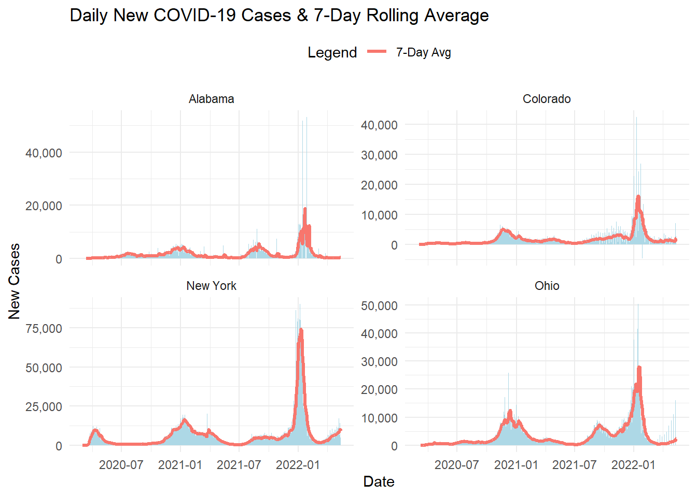
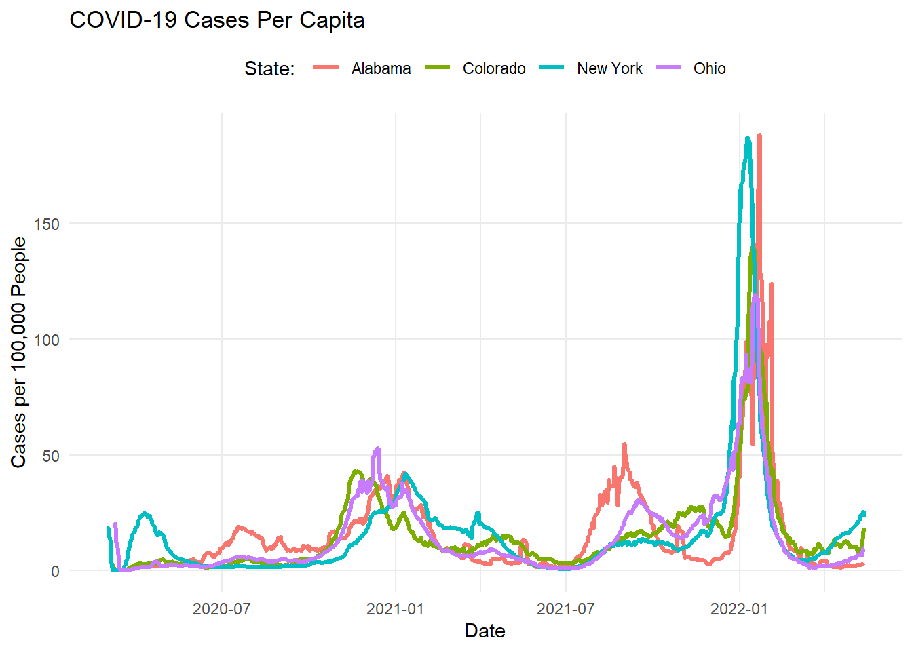

my.date <- as.Date("2022-02-01")
my.state <- "Colorado"
colorado_data <- covid_data %>%
filter(state == my.state) %>%
arrange(county, date) %>%
group_by(county) %>%
mutate(new_cases = cases - lag(cases, default = first(cases)),
new_deaths = deaths - lag(deaths, default = first(deaths))) %>%
ungroup()
latest_data <- colorado_data %>%
filter(date == my.date)
top_cumulative_cases <- latest_data %>%
slice_max(cases, n = 5) %>%
select(Date = date, County = county, `Total Cases` = cases) %>%
flextable() %>%
set_caption(caption = "The Top 5 Countires with the Most Cumulative Cases")
top_new_cases <- latest_data %>%
slice_max(new_cases, n = 5) %>%
select(Date = date, County = county, `New Cases` = new_cases) %>%
flextable() %>%
set_caption(caption = "The Top 5 Counties with the Most New Cases")
latest_date <- max(latest_data$date, na.rm = TRUE)
latest_data <- latest_data %>% filter(date == latest_date)
safe_counties <- latest_data %>%
filter(new_cases < 10) %>%
select(County = county)
num_safe_counties <- nrow(safe_counties)
safe_counties_table <- safe_counties %>%
flextable() %>%
set_caption(caption = "The Top 5 Counties with Low Case Counts in Colorado")
total_new_cases <- sum(latest_data$new_cases, na.rm = TRUE)
total_cumulative_cases <- sum(latest_data$cases, na.rm = TRUE)Lab 3: COVID-19
Ecosystem Science and Sustainability 330
Question 1
Answer: Having easy access to historical and real-time environmnetal data shapes our understanding of climate trends, resource management, and public health by giving the public and scientists/researches the ability to analyze and study trends and patterns as well as create predictions for the future. When this data disappears or becomes inaccessible, it could create challenges for the public and scientists/researchers to understand what is happening in the real world.
Question 2
Answer: The top counties with the highest total cumulative cases include El Paso, Denver, Arapahoe, Adams, and Jefferson. The top counties with the highest total new cases include El Paso, Arapahoe, Denver, Adams, and Jefferson. The number of safe counties from this data is 34.
Question 3
population_data <- read_csv("https://www2.census.gov/programs-surveys/popest/datasets/2020-2021/counties/totals/co-est2021-alldata.csv")Rows: 3194 Columns: 35
── Column specification ────────────────────────────────────────────────────────
Delimiter: ","
chr (5): SUMLEV, STATE, COUNTY, STNAME, CTYNAME
dbl (30): REGION, DIVISION, ESTIMATESBASE2020, POPESTIMATE2020, POPESTIMATE2...
ℹ Use `spec()` to retrieve the full column specification for this data.
ℹ Specify the column types or set `show_col_types = FALSE` to quiet this message.covid_data <- read_csv("https://raw.githubusercontent.com/nytimes/covid-19-data/master/us-counties.csv")Rows: 2502832 Columns: 6
── Column specification ────────────────────────────────────────────────────────
Delimiter: ","
chr (3): county, state, fips
dbl (2): cases, deaths
date (1): date
ℹ Use `spec()` to retrieve the full column specification for this data.
ℹ Specify the column types or set `show_col_types = FALSE` to quiet this message.population_data_clean <- population_data %>%
mutate(
STATE = sprintf("%02d", as.numeric(STATE)),
COUNTY = sprintf("%03d", as.numeric(COUNTY)),
FIPS = paste0(STATE, COUNTY)
) %>%
filter(COUNTY != "000") %>%
select(FIPS, CTYNAME, POPESTIMATE2021, DEATHS2021)
covid_data <- covid_data %>%
mutate(FIPS = as.character(fips))
joined_data <- covid_data %>%
left_join(population_data_clean, by = "FIPS")
joined_data <- joined_data %>%
arrange(FIPS, date) %>%
group_by(FIPS) %>%
mutate(
new_cases = cases - lag(cases, default = first(cases)),
new_deaths = deaths - lag(deaths, default = first(deaths)),
per_capita_cumulative_cases = cases / POPESTIMATE2021,
per_capita_new_cases = new_cases / POPESTIMATE2021,
per_capita_new_deaths = new_deaths / POPESTIMATE2021
) %>%
ungroup()
top_cumulative_cases <- joined_data %>%
filter(date == "2022-02-01") %>%
arrange(desc(per_capita_cumulative_cases)) %>%
select(County = CTYNAME, Cases = per_capita_cumulative_cases) %>%
head(5)
top_new_cases <- joined_data %>%
filter(date == "2022-02-01") %>%
arrange(desc(per_capita_new_cases)) %>%
select(County = CTYNAME, Cases = per_capita_new_cases) %>%
head(5)
flextable(top_cumulative_cases) %>%
set_caption(caption = "The Top 5 Counties by Cumulative Cases Per Capita")County | Cases |
|---|---|
Loving County | 2.1929825 |
Chattahoochee County | 0.7431477 |
Dimmit County | 0.6253983 |
Crowley County | 0.4881903 |
Dewey County | 0.4563477 |
flextable(top_new_cases) %>%
set_caption(caption = "The Top 5 Counties by New Cases Per Capita")County | Cases |
|---|---|
Loving County | 0.105263158 |
Jim Hogg County | 0.009581337 |
Crowley County | 0.009314704 |
Oglala Lakota County | 0.008317386 |
Knox County | 0.006553211 |
Question 4
last_14_days <- joined_data %>%
filter(date >= max(date) - 14)
county_summary <- last_14_days %>%
group_by(CTYNAME) %>%
summarize(
total_new_cases = sum(new_cases, na.rm = TRUE),
population = first(POPESTIMATE2021),
new_cases_per_100k = (total_new_cases / population) * 100000
) %>%
ungroup()
top_counties <- county_summary %>%
slice_max(new_cases_per_100k, n = 5) %>%
select(County = CTYNAME, Cases = new_cases_per_100k)
top_counties_table <- flextable(top_counties) %>%
set_caption(caption = "The Top 5 Counties by New Cases Per 100,000")
top_counties_tableCounty | Cases |
|---|---|
King County | 6,607,751.94 |
Cook County | 204,023.22 |
Lane County | 97,699.68 |
Morris County | 73,114.26 |
Washington County | 62,982.77 |
watch_list_count <- sum(county_summary$new_cases_per_100k > 100, na.rm = TRUE)
cat("Number of counties on the watch list: ", watch_list_count)Number of counties on the watch list: 1253Question 5
library(ggplot2)
library(dplyr)
library(readr)
population_data <- read_csv("https://www2.census.gov/programs-surveys/popest/datasets/2020-2021/counties/totals/co-est2021-alldata.csv")Rows: 3194 Columns: 35
── Column specification ────────────────────────────────────────────────────────
Delimiter: ","
chr (5): SUMLEV, STATE, COUNTY, STNAME, CTYNAME
dbl (30): REGION, DIVISION, ESTIMATESBASE2020, POPESTIMATE2020, POPESTIMATE2...
ℹ Use `spec()` to retrieve the full column specification for this data.
ℹ Specify the column types or set `show_col_types = FALSE` to quiet this message.population_data_clean <- population_data %>%
mutate(
STATE = sprintf("%02d", as.numeric(STATE)),
COUNTY = sprintf("%03d", as.numeric(COUNTY)),
FIPS = paste0(STATE, COUNTY)
) %>%
filter(COUNTY != "000") %>%
select(FIPS, CTYNAME, POPESTIMATE2021, DEATHS2021)
population_data_clean[] <- lapply(population_data_clean, function(x) {
if (is.character(x)) iconv(x, from = "latin1", to = "UTF-8") else x
})
population_data_clean$FIPS <- as.character(population_data_clean$FIPS)
population_data_clean <- population_data_clean %>%
mutate(death_percentage = (DEATHS2021 / POPESTIMATE2021) * 100) %>%
filter(!is.na(death_percentage))
high_death_counties <- population_data_clean %>%
filter(death_percentage >= 1) %>%
arrange(desc(death_percentage))
top_20_death_percent <- high_death_counties %>%
head(20)
ggplot(top_20_death_percent, aes(x = reorder(CTYNAME, death_percentage), y = death_percentage)) +
geom_bar(stat = "identity", fill = "steelblue") +
coord_flip() +
labs(
title = "Top 20 Counties by Death Percentage",
x = "County",
y = "Death Percentage"
) +
theme_minimal()Question 6
library(ggplot2)
library(dplyr)
library(readr)
library(zoo)
census_data <- read_csv("https://www2.census.gov/programs-surveys/popest/datasets/2020-2021/counties/totals/co-est2021-alldata.csv")Rows: 3194 Columns: 35
── Column specification ────────────────────────────────────────────────────────
Delimiter: ","
chr (5): SUMLEV, STATE, COUNTY, STNAME, CTYNAME
dbl (30): REGION, DIVISION, ESTIMATESBASE2020, POPESTIMATE2020, POPESTIMATE2...
ℹ Use `spec()` to retrieve the full column specification for this data.
ℹ Specify the column types or set `show_col_types = FALSE` to quiet this message.state_population <- census_data %>%
group_by(STNAME) %>%
summarize(STATE_POPULATION = sum(POPESTIMATE2021, na.rm = TRUE)) %>%
filter(STNAME %in% c("New York", "Colorado", "Alabama", "Ohio"))
covid_data <- read_csv("https://raw.githubusercontent.com/nytimes/covid-19-data/master/us-counties.csv")Rows: 2502832 Columns: 6
── Column specification ────────────────────────────────────────────────────────
Delimiter: ","
chr (3): county, state, fips
dbl (2): cases, deaths
date (1): date
ℹ Use `spec()` to retrieve the full column specification for this data.
ℹ Specify the column types or set `show_col_types = FALSE` to quiet this message.state_covid_data <- covid_data %>%
filter(state %in% c("New York", "Colorado", "Alabama", "Ohio")) %>%
group_by(state, date) %>%
summarize(total_cases = sum(cases, na.rm = TRUE), .groups = "drop") %>%
arrange(state, date) %>%
group_by(state) %>%
mutate(
new_cases = total_cases - lag(total_cases),
new_cases = replace_na(new_cases, 0),
rolling_avg_cases = zoo::rollmean(new_cases, k = 7, fill = NA, align = "right")
) %>%
ungroup()
state_covid_data <- state_covid_data %>%
mutate(
new_cases = as.numeric(new_cases),
rolling_avg_cases = as.numeric(rolling_avg_cases)
)
state_covid_data <- state_covid_data %>%
filter(!is.na(new_cases))
state_covid_data$new_cases[is.na(state_covid_data$new_cases)] <- 0
state_covid_data$rolling_avg_cases[is.na(state_covid_data$rolling_avg_cases)] <- 0
ggplot(state_covid_data, aes(x = date, y = new_cases)) +
geom_bar(stat = "identity", fill = "lightblue") +
geom_line(aes(y = rolling_avg_cases, color = "7-Day Avg"), linewidth = 1.2) +
facet_wrap(~state, scales = "free_y") +
scale_y_continuous(labels = scales::comma) +
labs(
title = "Daily New COVID-19 Cases & 7-Day Rolling Average",
x = "Date",
y = "New Cases",
color = "Legend"
) +
theme_minimal() +
theme(legend.position = "top")
# Plot 2
covid_per_capita <- state_covid_data %>%
left_join(state_population, by = c("state" = "STNAME")) %>%
mutate(
cases_per_capita = (new_cases / STATE_POPULATION) * 100000,
rolling_avg_per_capita = zoo::rollmean(cases_per_capita, k = 7, fill = NA, align = "right")
) %>%
filter(!is.na(rolling_avg_per_capita))
ggplot(covid_per_capita, aes(x = date, y = rolling_avg_per_capita, color = state)) +
geom_line(linewidth = 1.2) +
labs(
title = "COVID-19 Cases Per Capita",
x = "Date",
y = "Cases per 100,000 People",
color = "State"
) +
theme_minimal() +
theme(legend.position = "top")
Answer: Briefly describe the influence scaling by population had on the analysis? Does it make some states look better? Some worse? How so?
Question 7
library(tidyverse)
library(lubridate)
library(ggplot2)
library(ggmap)ℹ Google's Terms of Service: <https://mapsplatform.google.com>
Stadia Maps' Terms of Service: <https://stadiamaps.com/terms-of-service/>
OpenStreetMap's Tile Usage Policy: <https://operations.osmfoundation.org/policies/tiles/>
ℹ Please cite ggmap if you use it! Use `citation("ggmap")` for details.library(readr)
county_centroids <- read_csv("https://raw.githubusercontent.com/mikejohnson51/csu-ess-330/refs/heads/main/resources/county-centroids.csv")Rows: 3221 Columns: 3
── Column specification ────────────────────────────────────────────────────────
Delimiter: ","
chr (1): fips
dbl (2): LON, LAT
ℹ Use `spec()` to retrieve the full column specification for this data.
ℹ Specify the column types or set `show_col_types = FALSE` to quiet this message.covid_data <- read_csv("https://raw.githubusercontent.com/nytimes/covid-19-data/master/us-counties.csv")Rows: 2502832 Columns: 6
── Column specification ────────────────────────────────────────────────────────
Delimiter: ","
chr (3): county, state, fips
dbl (2): cases, deaths
date (1): date
ℹ Use `spec()` to retrieve the full column specification for this data.
ℹ Specify the column types or set `show_col_types = FALSE` to quiet this message.covid_data <- covid_data %>% mutate(fips = as.character(fips))
county_centroids <- county_centroids %>% mutate(fips = as.character(fips))
missing_fips <- anti_join(covid_data, county_centroids, by = "fips")
print(paste("Missing FIPS count:", nrow(missing_fips)))[1] "Missing FIPS count: 29559"covid_with_location <- covid_data %>%
left_join(county_centroids, by = "fips")
covid_with_location <- covid_with_location %>%
filter(!is.na(LON) & !is.na(LAT))
summary(covid_with_location$cases) Min. 1st Qu. Median Mean 3rd Qu. Max.
1 390 1790 9807 5907 2908425 case_threshold <- quantile(covid_with_location$cases, 0.99, na.rm = TRUE)
covid_with_location <- covid_with_location %>%
filter(cases <= case_threshold)
covid_with_location <- covid_with_location %>%
mutate(date = as.Date(date))
weighted_mean_center <- covid_with_location %>%
group_by(date) %>%
summarize(
total_cases = sum(cases, na.rm = TRUE),
WMC_LON = sum(LON * cases, na.rm = TRUE) / sum(cases, na.rm = TRUE),
WMC_LAT = sum(LAT * cases, na.rm = TRUE) / sum(cases, na.rm = TRUE),
month = month(date)
) %>%
filter(!is.na(WMC_LON) & !is.na(WMC_LAT))Warning: Returning more (or less) than 1 row per `summarise()` group was deprecated in
dplyr 1.1.0.
ℹ Please use `reframe()` instead.
ℹ When switching from `summarise()` to `reframe()`, remember that `reframe()`
always returns an ungrouped data frame and adjust accordingly.`summarise()` has grouped output by 'date'. You can override using the
`.groups` argument.weighted_mean_center <- weighted_mean_center %>%
mutate(month = factor(month, levels = 1:12, labels = month.name))
filtered_wmc <- weighted_mean_center %>%
filter(WMC_LON >= -130 & WMC_LON <= -60 &
WMC_LAT >= 20 & WMC_LAT <= 55)
ggplot() +
borders("state", fill = "gray90", colour = "white") +
geom_point(data = filtered_wmc,
aes(x = WMC_LON, y = WMC_LAT, color = month, size = total_cases),
alpha = 0.7) +
scale_color_viridis_d() +
theme_minimal() +
labs(
title = "COVID-19 Weighted Mean Center in the USA",
x = "Longitude",
y = "Latitude",
color = "Month",
size = "Total Cases"
) +
theme(
legend.position = "right",
legend.title = element_text(size = 7),
legend.text = element_text(size = 5),
legend.key.size = unit(0.2, "cm"),
legend.spacing.y = unit(0.2, "cm"),
plot.margin = margin(10, 10, 10, 10)
)Answer: In a few sentences, describe the movement of the COVID-19 weighted mean throughout the USA and possible drivers of its movement given your knowledge of the outbreak hot spots.
Question 8
library(tidyverse)
library(lubridate)
library(ggplot2)
library(ggmap)
library(patchwork)
weighted_mean_center_cases <- covid_with_location %>%
group_by(date) %>%
summarize(
total_cases = sum(cases, na.rm = TRUE),
WMC_LON_cases = sum(LON * cases, na.rm = TRUE) / sum(cases, na.rm = TRUE),
WMC_LAT_cases = sum(LAT * cases, na.rm = TRUE) / sum(cases, na.rm = TRUE)
)
weighted_mean_center_deaths <- covid_with_location %>%
group_by(date) %>%
summarize(
total_deaths = sum(deaths, na.rm = TRUE),
WMC_LON_deaths = sum(LON * deaths, na.rm = TRUE) / sum(deaths, na.rm = TRUE),
WMC_LAT_deaths = sum(LAT * deaths, na.rm = TRUE) / sum(deaths, na.rm = TRUE)
)
weighted_mean_center_cases <- weighted_mean_center_cases %>%
filter(!is.na(WMC_LON_cases) & !is.na(WMC_LAT_cases))
weighted_mean_center_deaths <- weighted_mean_center_deaths %>%
filter(!is.na(WMC_LON_deaths) & !is.na(WMC_LAT_deaths))
weighted_mean_center_cases <- weighted_mean_center_cases %>%
filter(WMC_LON_cases >= -180 & WMC_LON_cases <= 180,
WMC_LAT_cases >= -90 & WMC_LAT_cases <= 90)
weighted_mean_center_deaths <- weighted_mean_center_deaths %>%
filter(WMC_LON_deaths >= -180 & WMC_LON_deaths <= 180,
WMC_LAT_deaths >= -90 & WMC_LAT_deaths <= 90)
plot_cases <- ggplot() +
borders("state", fill = "gray90", colour = "white") +
geom_point(data = weighted_mean_center_cases,
aes(x = WMC_LON_cases, y = WMC_LAT_cases, color = "red", size = total_cases),
alpha = 0.7) +
scale_color_manual(values = "red") +
theme_minimal() +
labs(
title = "WMC for Cases",
x = "Longitude",
y = "Latitude",
color = "Cases",
size = "Total Cases"
) +
theme(
legend.position = "right",
legend.title = element_text(size = 7),
legend.text = element_text(size = 5),
legend.key.size = unit(0.2, "cm"),
legend.spacing.y = unit(0.2, "cm"),
plot.margin = margin(10, 10, 10, 10)
)
plot_deaths <- ggplot() +
borders("state", fill = "gray90", colour = "white") +
geom_point(data = weighted_mean_center_deaths,
aes(x = WMC_LON_deaths, y = WMC_LAT_deaths, color = "navy", size = total_deaths),
alpha = 0.7) +
scale_color_manual(values = "navy") +
theme_minimal() +
labs(
title = "WMC for Deaths",
x = "Longitude",
y = "Latitude",
color = "Deaths",
size = "Total Deaths"
) +
theme(
legend.position = "right",
legend.title = element_text(size = 7),
legend.text = element_text(size = 5),
legend.key.size = unit(0.2, "cm"),
legend.spacing.y = unit(0.2, "cm"),
plot.margin = margin(10, 10, 10, 10)
)
combined_plot <- plot_cases + plot_deaths + plot_layout(ncol = 2)
print(combined_plot)